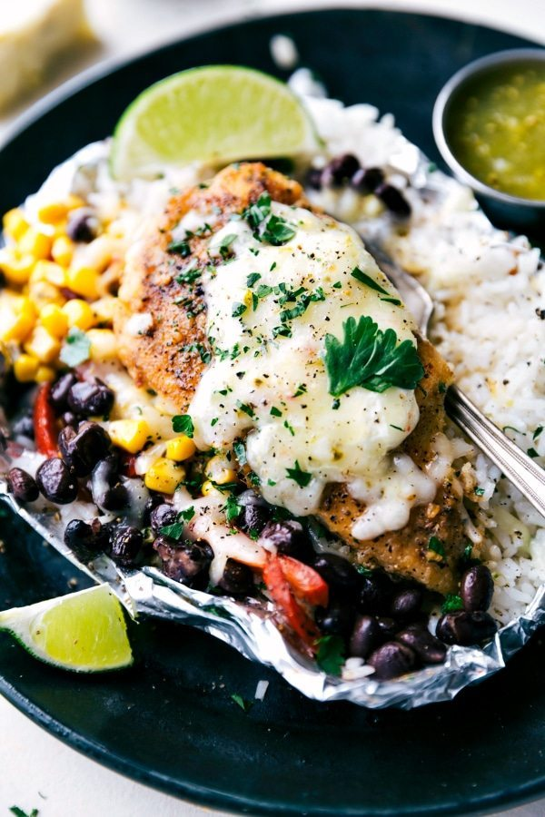

Creamy Salsa Verde Foil Pack Chicken

Full disclosure, this recipe was entirely stolen from Cheslea's Messy Apron.
I've been making this recipe ever since college as it is inexpensive, ridiculously easy, delicious and filling! The process of making this recipe is basically tossing all the ingredients together in foil and then roasting, so it's extremely simple.
This delicious dish can be dumped on a plate and eaten as is, but I like to shred the chicken once I'm done, mix the dish together in a bowl, and then use the result as quesadilla/taco/burrito filling. Read the directions below and I hope you enjoy!
Ingredients
For this recipe you will need:
- 2 cups of cooked white rice
- 2 large boneless skinless chicken breasts (about 7 oz each should do)
- A roll of heavy duty tin foil
- Cooking spray (or something similar to grease the foil with)
- 1/2 teaspoon each of cumin, garlic powder, salt, and pepper
- 1 teaspooon chili powder
- 1/8 teaspoon smoked paprika
- 2 tablespoons cream cheese
- 6 tablespoons salsa verde
- 1 15oz. can each of Black Beans and Roasted or Sweet Corn
- 1/2 cup of shredded pepperjack cheese
Directions
- Preheat the oven to 400 degrees F
- Grease 2 large sheets of heavy duty tin foil with the cooking spray
- In a bowl, toss together all of the seasonings. Then, dregdge each chicken breast evenly with the seasoning on both sides.
- Divide the cooked rice evenly among the two foil packets
- Place the seasoned chicken on top of the rice
- Put one tablespoon on top of each off the chicken breasts
- After opening and draining the can, put half a can of black beans and half a can of corn next to each chicken breast
- Pour 3 tablespoons of salsa verde on top of each chicken breast
- Sprinkle the cheese on top of both chicken breasts
- Seal the packets tightly. This can be done by either folding over the remaining tin foil or applying another greased peice of foil on top and folding the edges together
- Bake for 30-50 minutes or until the chicken is completely cooked through. Depending on your oven and the thickness of your chicken bake times will vary.
Pro Tip!
This recipe is great for meal prep. What I typically do with this meal is shred all the chicken, mix all the contents of the foil pack together in a bowl, and then save the resulting mixture for leftovers. It's very easy to re-heat and makes a great filling for a quesadilla or bowl. Just make sure that you wait until the chicken has rested for 10 minutes after cooking before shredding. Otherise your chicken will end up very dry and gamey.
Return to homepage